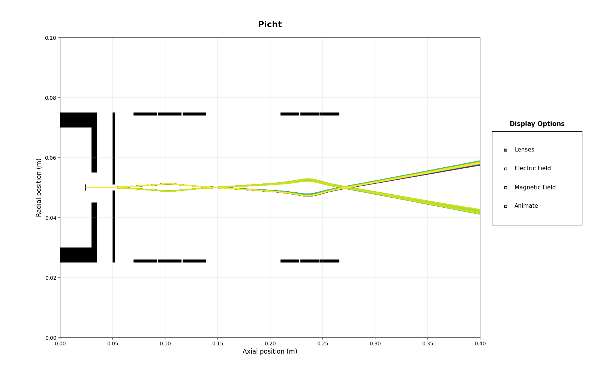

Note
Go to the end to download the full example code.
Full-Scale SEM Simulation
Here’s a full simulation of an electrostatic lens-only scanning electron microscope (SEM), where we combine electrostatic lenses, einzel lenses, and complex acceleration, focusing and defocusing behaviors in one instance. We chain together several electrodes, a condenser (einzel) lens, and an objective (einzel) lens and observe two full crossovers- that’s where the beams make an X. Note how because of the clean-ness of the design, it looks like two clean lines- this isn’t because we’ve parameterized the beam this way, but because of the electron optics at play. Tinker with the parameters here, see how things change. Note: You’ll have to zoom in for this, because the default system is WAY too small to see. Learn to use matplotlib’s visualization tools to better understand the system.
Some design decisions we’ve made for full physical realism include: 0.1 eV beam initialization to mimic thermionic emission from tungsten 5kV accelerating voltage from a hairpin cathode, with -100V biased Wehnelt Cylinders. A -7200V condenser lens and a -10,000V objective lens. Three total crossover points of increasing tightness.
 17 import numpy as np
18 from picht import ElectronOptics, ElectrodeConfig
19 import matplotlib.pyplot as plt
20
21 system = ElectronOptics(nr=100, nz=400, axial_size=0.4, radial_size = 0.1)
22
23
24 #Wehnelt Cylinders- responsible for the first crossover
25 wehnelt1 = ElectrodeConfig(
26 start=0,
27 width=30,
28 ap_start=30,
29 ap_width=40,
30 outer_diameter = 50,
31 voltage=-5100 #biased at -100V in relation to the cathode
32 )
33 wehnelt2 = ElectrodeConfig(
34 start=30,
35 width=5,
36 ap_start=45,
37 ap_width=10,
38 outer_diameter = 50,
39 voltage=-5100 #biased at -100V in relation to the cathode
40 )
41 system.add_electrode(wehnelt1)
42 system.add_electrode(wehnelt2)
43
44 #Anode- +5000V in relation to the cathode, to provide acceleration
45 anode = ElectrodeConfig(
46 start=50,
47 width = 2,
48 ap_start=49,
49 ap_width=2,
50 outer_diameter = 50,
51 voltage=0
52 )
53 #Cathode- represents the thermionic tungsten filament electrons boil off from
54 cathode = ElectrodeConfig(
55 start=24,
56 width = 1,
57 ap_start=50,
58 ap_width=0,
59 outer_diameter = 2,
60 voltage=-5000
61 )
62 system.add_electrode(anode)
63 system.add_electrode(cathode)
64
65 #Condenser Lens- In between the first and second crossover point, provides initial focusing
66 system.add_einzel_lens(
67 position= 70.0,
68 width=70.0,
69 aperture_center=50.0,
70 aperture_width=48.0,
71 outer_diameter=50.0,
72 focus_voltage=-8000
73 )
74
75 #Objective Lens- Provides final focusing mere millimeters after its end
76
77 system.add_einzel_lens(
78 position= 210.0,
79 width=57.0,
80 aperture_center=50.0,
81 aperture_width=48.0,
82 outer_diameter=50.0,
83 focus_voltage=-10000
84 )
85
86 potential = system.solve_fields()
87
88 #Notice how we initialize it at only 0.1 eV- the acceleration happens from the field lines between the cathode and anode
89 trajectories = system.simulate_beam(
90 energy_eV= 0.1,
91 start_z=0.025, #We begin at z = 0.025, or 25 grid units in the z-direction so that there's a bit of Wehnelt Cylinder behind this
92 r_range=(0.0499925, 0.0500075), #15 micron thick beam, which is a realistic amount
93 angle_range=(-2, 2), #very high initial angular divergence to mimic thermionic emission
94 num_particles=100, #increasing this won't improve visualization, because the beams are artificially forced into an axisymmetric path because of the electrode configurations
95 simulation_time=2e-8 #empirically found value for when the full simulation completes
96 )
97
98 figure = system.visualize_system(
99 trajectories=trajectories,
100 display_options=[True, False, False, False])
101
102 plt.show()
Total running time of the script: (0 minutes 8.372 seconds)